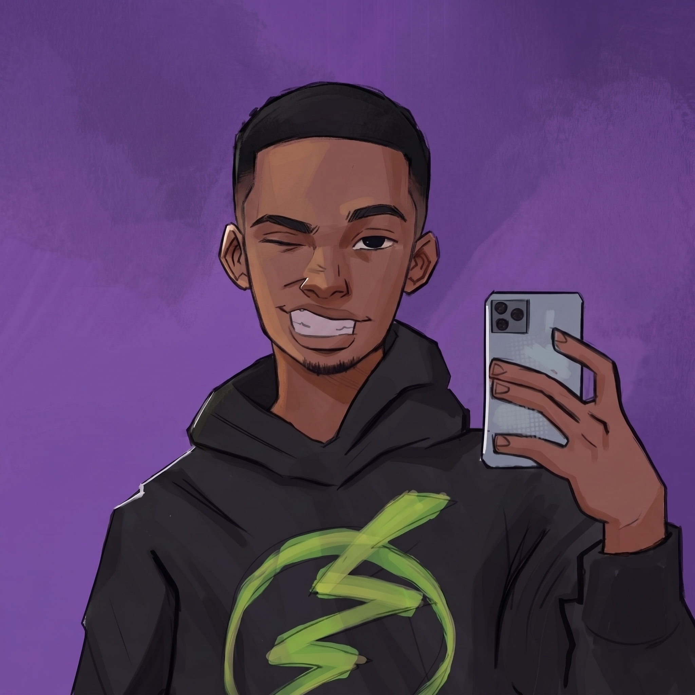

Portafolio Creativo
Diseño visual que
conecta y comunica.
Mi nombre es Camilo Alvarez. Mi objetivo es transformar ideas complejas en experiencias estéticas, minimalistas y funcionales para tu empresa, almacen o negocio.
Trabajo Seleccionado
Una muestra de mis proyectos más recientes.
Imagen / UI Design
Sistema de Diseño Fintech
Creación de componentes visuales y dirección fotográfica corporativa.
Enfoque y Filosofía
Creo firmemente que el diseño no es solo decoración, es comunicación. Ya sea editando un video de un minuto o componiendo una imagen estática, mi objetivo es guiar el ojo del espectador y contar una historia clara.
